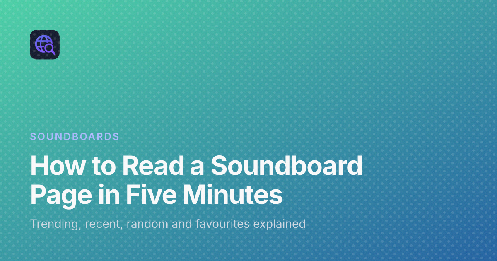

How to Read a Soundboard Page in Five Minutes: Trending, Recently Added, Random and Favourites
You open a soundboard and see a wall of buttons. Hundreds of names, a search box, a row of categories. It is easy to tap the first thing you see, laugh once and leave. It is also easy to spend ten minutes scrolling and find nothing you wanted.
Most browser soundboards, including Meme Tap, solve this with four ready-made views of the same library: Trending, Recently Added, Random and Favourites. Each answers a different question. This guide explains what each view is for, how to combine them, and a five-minute routine for finding the sound you need without getting lost.
Why one big list is not enough
A soundboard library is large because people keep adding clips. A single alphabetical list would be accurate and useless: the clip you want could be anywhere, and the clips other people are laughing at this week would be buried among thousands of old ones.
The four views work because they sort the same pile by four different ideas: what is popular now, what is new, what is a surprise and what is yours. Learning which idea matches your question saves most of the scrolling.
Trending: what people are pressing this week
The Trending page lists the sound buttons people are tapping the most this week, mixing meme buttons, funny sounds and short effects from across the board. If your question is “what will people recognise?”, this is the first place to look. A page of popular sound effects answers it directly, because recognition is the whole point of a shared joke.
Two cautions. First, the list changes, so a clip you saw on Monday may have moved by Friday. If you want to use one in a video, note its name rather than relying on finding it again at the same spot. Second, popular does not mean suitable. A clip that is everywhere may contain language or a tone that does not fit your audience. Always play it before you use it.
Recently Added: what is new
The Recently Added page shows the latest buttons added to the board, again across every category. It answers a different question: “what do I not already know?”. If you are tired of the same clips, this is where fresh ones appear first.
New clips are also the least tested. Some will be great and some will be quiet, long or oddly cut. Treat the page as a place to browse, not a recommendation list, and preview each one.
Random: a roll of the dice from the whole library
The Random page picks a clip from the entire library, not from a single category. You tap Roll, listen, and roll again if it is not what you want. You can play it there, download the file or open its page.
Random is the one view that shows you things you would never search for. It is also a good way to test how a soundboard behaves on your device, because every roll is a different clip. If you want a relaxed way to discover meme sounds you did not know existed, a few rolls is a good start. When one makes you laugh, keep it.
Favourites: the short list that is yours
The Favourites page shows the sound buttons you have hearted. The hearts stay in this browser, on this device, and no account is needed. That has two practical effects: your list is private and instant, and it does not follow you to another phone or computer. If you clear the site data for that browser, the list goes with it.
Your saved sound buttons turn a library of thousands into a small kit of the few you actually use. The habit that helps most is saving a clip the moment you decide you like it, not later. Later, you will not remember its name.
Search and categories: for when you know what you want
Those four views are for discovery. When you already have an idea, such as a game, a character or a feeling, the search box and the category list are faster. Categories group clips by theme: games, animals, memes, reactions and so on. A clip filed under one category may not appear under another, so if a search comes up empty, try a nearby category before deciding it does not exist.
Each result is its own page. From there you can play the clip, download an MP3 or copy the page link to share. Copying the link is useful when you want someone to hear the clip in their own browser rather than receive a file.
A five-minute routine
- One minute on Trending. Play the top few. Note any that fit what you are making.
- One minute on Recently Added. Look for something fresh in the same mood.
- One minute on Random. Roll five times. Keep anything that surprises you.
- One minute on search. Look for the specific sound you had in mind.
- One minute on Favourites. Heart your keepers and delete anything you no longer want.
At the end, you should have a short list of clips, a sense of what is current and maybe one pleasant surprise. If the list is long, cut it. A small set is easier to use under pressure.
Common mistakes
- Saving too many. A Favourites list of two hundred is just another library. Keep the ones you press.
- Trusting a clip by its title. Titles describe, but they do not tell you how loud or how long the clip is.
- Forgetting favourites live on one device. If you switch phones, you start from zero, so write down the names of the clips you cannot lose.
- Following Trending blindly. A clip everyone uses is safe, but it is rarely the one that stands out.
- Skipping the preview. The first play should always be at a low volume, away from other people.
Using a clip once you have found it
Finding the sound is only half the job. A few habits make the other half easier. Trim any silence at the start so the sound lands on time. Keep the clip short. Keep the volume below speech if it will play under a voice. And remember that a download is not a licence: platform rules and the origin of the clip still apply.
Questions people ask
Do I need an account to save favourites? No. Favourites are stored in the browser on that device.
Why does a clip I saw yesterday look different on Trending today? The list reflects what people are pressing this week, so positions move.
Is Random really from everything? According to the page, the pick comes from the whole library, not one category.
Four views, four questions: what is popular, what is new, what is a surprise, what is mine. Match the question to the view and a wall of buttons becomes a short walk to the sound you need.